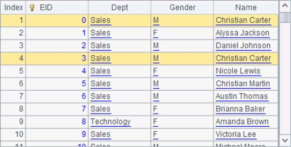

User-defined functions use esProc-specific parameters. The correspondence between data types of the parameters and those of Java objects is the same as that mentioned above. For an invocation, the parameter used in the user-defined function needs to be in consistent with the one used in the static method.
Particularly, sequence is the most frequently used data type in esProc. Besides returning a sequence as the result, user-defined functions can also use sequence type parameters. For example:
public static Double distance6(com.scudata.dm.Sequence seq1, com.scudata.dm.Sequence seq2) {
int len1 = seq1.length();
int len2 = seq2.length();
double x1 = len1 > 0 ? ((Number) seq1.get(1)).doubleValue(): 0;
double x2 = len2 > 0 ? ((Number) seq2.get(1)).doubleValue(): 0;
double y1 = len1 > 1 ? ((Number) seq1.get(2)).doubleValue(): 0;
double y2 = len2 > 1 ? ((Number) seq2.get(2)).doubleValue(): 0;
double len = Math.sqrt((x1-x2)*(x1-x2)+(y1-y2)*(y1-y2));
len = Math.round(len*1000)/1000d;
return Double.valueOf(len);
}
The user-defined function distance6 computes the distance between two points in a rectangular coordinate system. Coordinates of the two points need to be input using sequence type parameters during invocation. For example:
|
|
A |
|
1 |
[1,1] |
|
2 |
[3,3] |
|
3 |
=invoke(test.Calc01.distance6,A1,A2) |
Here¡¯s A3¡¯s result after computation:
